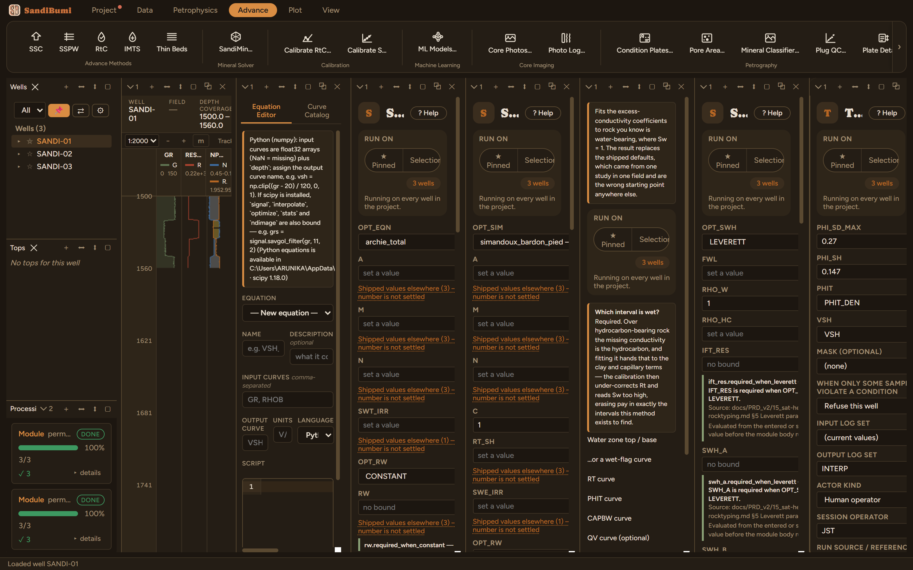

Thomas-Stieber places each measured (VSH, PHIT) point inside the mixing triangle between clean sand, pure laminated shale and pure dispersed shale, and reads off how much of the bulk shale is laminar (reducing net sand) and how much is dispersed (sitting inside the sand's pores). Structural shale is deliberately not modeled.

On these wells: 0 clean · 3 degraded, about 120 samples per well clamped to [0, 1] (a measured point falling outside the mixing triangle cannot yield a fraction beyond it, so the decomposition is held at the triangle's edge) and a handful held at the PHI_SD_MAX ceiling. In the transitional interval (GR 60–100) the median laminar fraction reads 0.635: this synthetic section's shale transitions read as predominantly laminated, which fits zone-blended logs. On real thin-bedded rock, VLAM against a high-resolution image log is the validation this decomposition wants before VSAND = 1−VLAM revises any net.